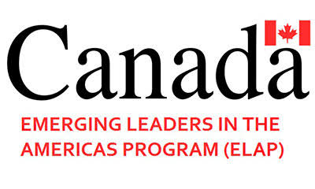
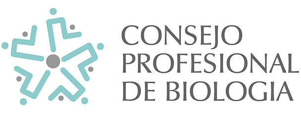
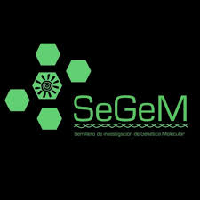
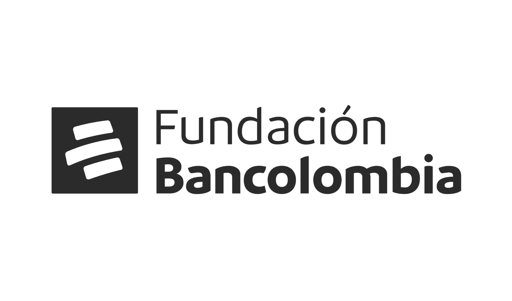
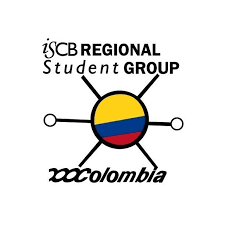
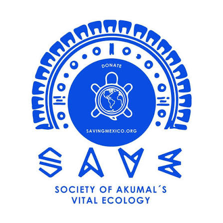
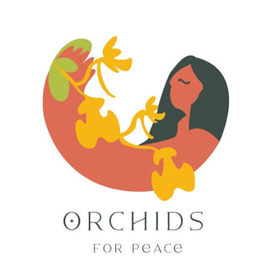
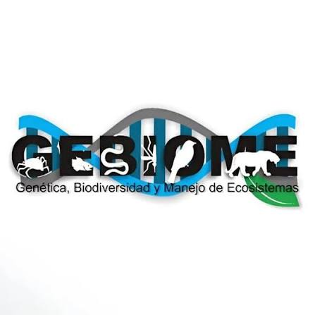

Hola, I'm Juan David
I'm a biologist from Manizales, Caldas, Colombia, broadly interested in molecular biology, bioinformatics, evolution, phylogenetics and ecology, disease ecology and biodiversity, mammalogy, and animal welfare — with a research focus on neotropical pathogens and diseases.
My work centers on molecular biology and microbiome description tied to disease and pathogen interactions, alongside a strong interest in bioinformatics: genomics, metagenomics, and transcriptomics, from 16S sequencing to RT-qPCR and gene expression analysis.
I have worked as a Research Assistant at Mount Saint Vincent University (MSVU), Canada, and I taught molecular biology and microbiology laboratory sessions as an Instructor for the Genes and Genomes Lab. I am currently recognized as Investigador Junior by Minciencias, Colombia.
Earlier in my career I worked in field and museum-based mammalogy at Universidad de Caldas, sampling wild mammals and birds in the Colombian Orinoquia and supporting specimen preparation at the Museum of Natural History, alongside I helped during the COVID pandemic as a molecular analyst. I'm a native Spanish speaker with advanced English.
In research publications you can find me as Juan D. Carvajal-Agudelo.
Professional experience


- Managed zebrafish husbandry and maintained welfare in accordance with CCAC guidelines.
- Wrote and assisted with Animal Care Committee (ACC) protocols.
- Supported CSA-funded research on bone physiology via simulated microgravity and vibration experiments; techniques included gene expression analysis, tissue staining, cell culture, and advanced microscopy.
- Conducted RT-qPCR, statistical analysis, prepared reports, and contributed to scientific articles and grant applications.
- Supervised and mentored undergraduate and graduate students.


- Pathogen detection via PCR and sequencing with molecular markers.
- 16S metagenomic bioinformatic analysis; report and article preparation.
- Specimen preparation and taxidermy support at the Museum of Natural History (mammalogy).


Education

Research projects


Publications
Awards & recognition




Volunteering & community





Further education & certifications
Career development courses
| Course | Institution | Year |
|---|---|---|
| Analysis of Exomes in Cancer | Universidad del Valle / Colombian Pre-Congress course on Computational Biology | 2017 |
| Genetic Engineering & Microbial Biotechnology | Universidad Santiago de Cali | 2018 |
| Evolutionary Genomic Training at the Caribbean Coast | Universidad de los Andes Sede Caribe, Cartagena | 2019 |
| Mammal Parasitology: Field Methods | U. de Antioquia – Univ. of Nebraska-Lincoln | 2019 |
| COVID-19: Tackling the Novel Coronavirus | FutureLearn | 2020 |
| Genomic Technologies in Clinical Diagnostics: Molecular Techniques | St George's, University of London – FutureLearn | 2020 |
| Metagenomics applied to pathogen & antimicrobial resistance surveillance | Technical University of Denmark – Coursera | 2020 |
| Whole Genome Sequencing of Bacterial Genomes | Technical University of Denmark – Coursera | 2020 |
| Bacterial Genomes Program (5 courses) | Wellcome Genome Campus – FutureLearn | 2020 |
| Bioinformatic Methods I & II | University of Toronto – Coursera | 2020 |
| Bioinformatics I, II & III | University of California, San Diego – Coursera | 2020 |
| Introduction to Genomic Technologies | Johns Hopkins University – Coursera | 2020 |
| Bioconductor for Genomic Data Science | Johns Hopkins University – Coursera | 2020 |
| Biological Diversity (Theories, Measures and Data Sampling) | Tomsk State University – Coursera | 2020 |
| GIS Specialization Program (5 courses) | Coursera | 2020 |
| Tropical Parasitology: Protozoans, Worms, Vectors and Human Diseases | Coursera | 2020 |
Certificates & research ethics training
| Certificate | Institution | Date |
|---|---|---|
| Introduction to the Care and Use of Fish | Dalhousie University – CCAC / NIAUT | Mar 2022 |
| CCAC Online Ethics – Fish Users | University of British Columbia | — |
| Research Ethics – Tri-Council Policy Statement (TCPS 2: CORE 2022) | Panel on Research Ethics, Government of Canada | 2022 |
| CCAC's Fish Welfare and Aquatic Facilities | CCAC Webinar | Nov 2024 |
| CCAC's Animal Welfare Assessment | CCAC Webinar | Jan 2025 |
| From Tank to Paper: Advance Reproducibility through Better Reporting | Zebrafish Husbandry Association Webinar | Feb 2025 |
| Ethics in University Research | Universidad del País Vasco – MiriadaX | — |
| Diploma in University Teaching and Didactics | Politécnico Superior de Colombia | — |
Scientific events & presentations
| Event & Presentation | Role | Year |
|---|---|---|
| 12th Atlantic Regional Developmental Biology Symposium, Halifax — Short-Term Gene Expression Responses in Danio rerio Larvae following Simulated Microgravity Exposure | Oral | 2025 |
| Biology and Applied Aquatic Sciences (BAAS), Wolfville, NS — Insights into 2D and 3D Simulated Microgravity: Impacts on Zebrafish Skeleton Ossification and Gene Expression | Poster | 2025 |
| Canadian Space Health Research Symposium, London, Ontario — Short-Term Gene Expression Responses in Danio rerio Larvae following Simulated Microgravity Exposure | Poster | 2024 |
| 11th Atlantic Regional Developmental Biology Symposium, Halifax — Exploring the Effects of Simulated Microgravity in Zebrafish: Differential Gene Expression and Ossification in 2D vs 3D Rotation | Oral | 2024 |
| American Association for Anatomy Annual Meeting, Washington DC — Spatial and Temporal Patterning of the Tracheal Cartilage | Co-author | 2023 |
| QAtCanSTEM, MSVU Halifax — Effects of simulated microgravity and vibration on osteoblast and osteoclast activity in cultured zebrafish scales | Poster | 2022 |
| 9th Atlantic Regional Developmental Biology Symposium, MSVU Halifax — Does exposure to simulated microgravity and vibration affect bone cells in a zebrafish scale system? | Poster | 2022 |
| XVII Colombian Congress of Parasitology and Tropical Medicine, Cali — Comparative evaluation of DNA conservation and extraction methods in blood of wild mammals | Poster | 2019 |
| VIII Colombian Symposium of Virology / IV Latin American Congress of Virology, Bogotá — HIV mortality and TB coinfection in Caldas, Colombia (2010–2018) | Poster | 2019 |
| XV Colombian & IX International Human Genetics Congress, Barranquilla — Epidemiological meta-analysis of variables related to canine breast cancer | Co-author | 2018 |
| V Regional Biology Symposium, UTP, Santa Rosa de Cabal — Two presentations on genotoxicity and hot spring microbial ecology | Poster | 2018 |
Get in touch
Open to research collaborations, questions about my work, or just a good conversation about biology.